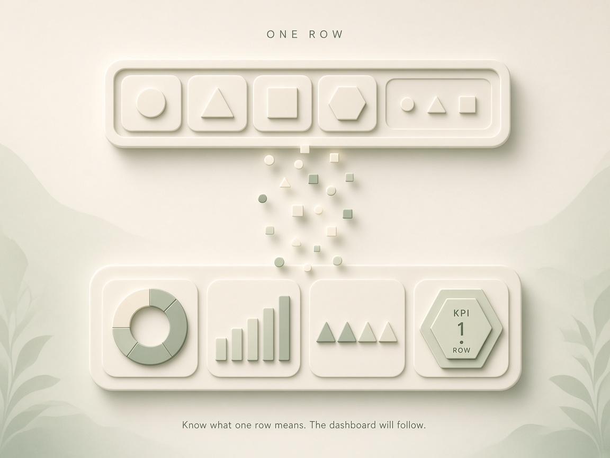

What Does One Row Mean?
There's a question I've started asking before I write a single line of SQL: what does one row in this table actually represent?
It sounds almost too basic to bother with. But in data engineering it has a name, the grain, and a lot of the strangest bugs I've seen come back to nobody being clear about it.
The bug that doesn't throw an error
Most broken pipelines tell you they're broken. A failed job, a type error, a null where there shouldn't be one. Grain problems don't do you that courtesy.
Take an NBA example from my side project. Say I've got one table at player-game grain (one row per player per game, with points, rebounds and minutes) and another at lineup-stint grain (one row for each stretch of time a five-man unit was on the floor). I want to see points next to lineup data, so I join them on player and game.
The join runs fine. But every player-game row now gets repeated once for each stint that player was part of. A player who featured in several lineups has his points copied several times over. Sum it up and the team "scored" far more than the final score. No error, no warning, just a number that looks impressive and is completely wrong.
That's a fan-out join, and it happens whenever you join two tables at different grains without thinking it through.
What I do about it now
- Write the grain down first. Before building a model I write one sentence in the description: "One row = one player, one game." If I can't write that sentence, I'm not ready to build the table.
- Test it, don't trust it. In dbt that means a uniqueness test on the columns that define the grain, for example
player_idplusgame_id. If someone later adds a join that duplicates rows, the test fails before anyone sees the dashboard. - Count rows before and after joins. It's a simple habit. If a left join to a lookup table should leave the row count unchanged and it doesn't, something has fanned out.
- Aggregate before you join. If I need lineup info next to player-game stats, I roll the stint table up to player-game grain first and then join like for like.

The accountant in me recognises this
Back when I was reconciling in finance, the same rule applied without anyone calling it grain. You don't compare journal lines with invoice-level totals and expect them to agree. You bring both sides to the same level first, then reconcile. Data tables are no different. Mismatched levels make the numbers drift, and you're left explaining a variance that never really existed.
It matters for AI work too
Lately, outside my day role, I've been spending more time on AI engineering projects, and grain shows up there as well. In a retrieval (RAG) setup, the "row" is a chunk. Is one chunk a paragraph, a page, a whole document or a single Q&A pair? Mix those carelessly and retrieval starts returning odd, overlapping or duplicated context, and the model confidently builds answers on top of it. Deciding what one chunk means is the same discipline as deciding what one row means.
The takeaway
Before you trust a total, ask what one row means, and make the pipeline prove it. It's the cheapest test you'll ever write, and it catches the bugs that never announce themselves.